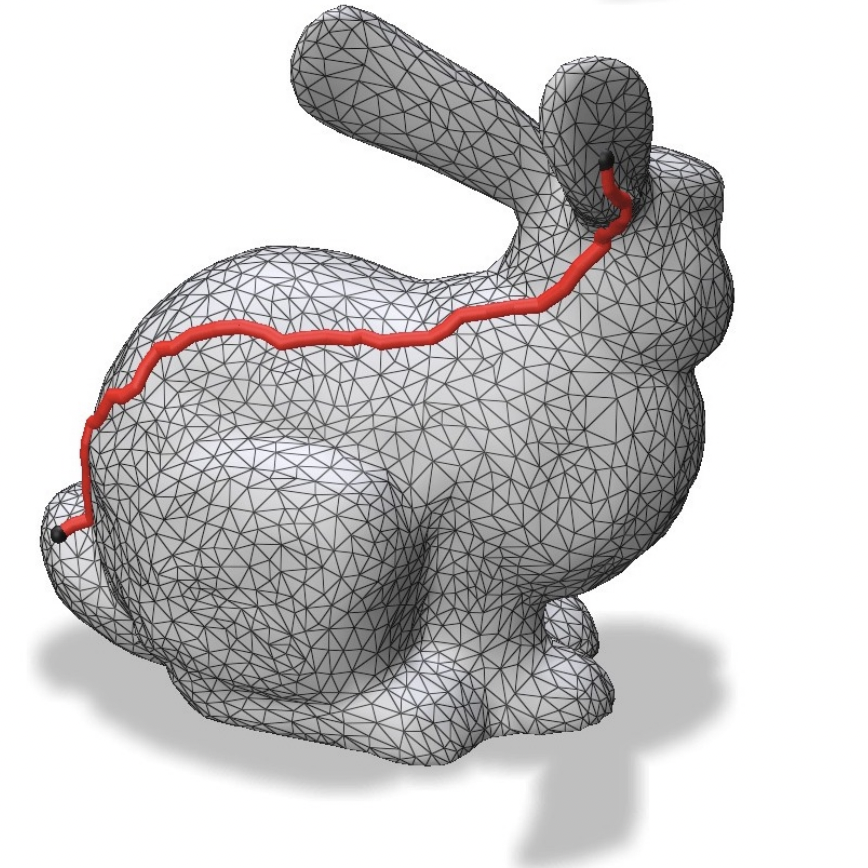

Rolandos Alexandros Potamias
I’m a Research Associate at Imperial College London in 3D Computer Vision and Deep Generative Models in non-Euclidean Spaces. I’m also a Senior Research Scientist at Huawei Noah's Ark, working with Jiankang Deng. My current interests lie in the intersection of generative models and 3D avatars, with particular emphasis on 3D Hands, Faces and Bodies. Previously I received my PhD in 3D Computer Vision from Imperial College London advised by Stefanos Zafeiriou. Prior to my PhD, I received my MEng degree at the National Technical University of Athens, where I was supervised by Prof. Andreas Stafylopatis.
News
- Jul 2024 Three papers accepted at ECCV 2024.
- Feb 2024 Three papers accepted at CVPR 2024.
- Mar 2023 Our workshop on NeRFs got accepted at ICCV 2023. work
- Mar 2022 Handy got accepted at CVPR 2023.
...show all...
SAGS: Structure-Aware 3D Gaussian Splatting
Evangelos Ververas, Rolandos Alexandros Potamias, Jifei Song, Jiankang Deng, Stefanos Zafeiriou
European Conference on Computer Vision (ECCV) 2024
@misc{ververas2024sags,
title={SAGS: Structure-Aware 3D Gaussian Splatting},
author={Evangelos Ververas and Rolandos Alexandros Potamias and Jifei Song and Jiankang Deng and Stefanos Zafeiriou},
year={2024},
eprint={2404.19149},
archivePrefix={arXiv},
primaryClass={cs.CV}
}
Copy
ShapeFusion: A 3D diffusion model for localized shape editing
Rolandos Alexandros Potamias, Michail Tarasiou, Stylianos Ploumpis, Stefanos Zafeiriou
European Conference on Computer Vision (ECCV) 2024
@article{potamias2024shapefusion,
title={ShapeFusion: A 3D diffusion model for localized shape editing},
author={Potamias, Rolandos Alexandros and Tarasiou, Michail and Ploumpis, Stylianos and Zafeiriou, Stefanos},
journal={arXiv preprint arXiv:2403.19773},
year={2024}
}
Copy
Design2Cloth: 3D Cloth Generation from 2D Masks
Jiali Zheng,Rolandos Alexandros Potamias, Stefanos Zafeiriou
IEEE/CVF Conference on Computer Vision and Pattern Recognition (CVPR) 2024
@inproceedings{zheng_2024_design2cloth,
title={Design2Cloth: 3D Cloth Generation from 2D Masks},
author={Jiali Zheng and Rolandos Alexandros Potamias and Stefanos Zafeiriou},
booktitle={IEEE/CVF Conference on Computer Vision and Pattern Recognition (CVPR)},
year={2024}
}
Copy
Neural Sign Actors: A diffusion model for 3D sign language production from text
Vasileios Baltatzis, Rolandos Alexandros Potamias, Evangelos Ververas, Guanxiong Sun, Jiankang Deng, Stefanos Zafeiriou
IEEE/CVF Conference on Computer Vision and Pattern Recognition (CVPR) 2024
@inproceedings{neuralsignactors2024,
title={Neural Sign Actors: A diffusion model for 3D sign language production from text},
author={Vasileios Baltatzis and Rolandos Alexandros Potamias and Evangelos Ververas and Guanxiong Sun and Jiankang Deng and Stefanos Zafeiriou},
booktitle={IEEE/CVF Conference on Computer Vision and Pattern Recognition (CVPR)},
year={2024}
}
Copy
Locally Adaptive Neural 3D Morphable Models
Michail Tarasiou,Rolandos Alexandros Potamias, Eimear O' Sullivan, Stylianos Ploumpis, Stefanos Zafeiriou
IEEE/CVF Conference on Computer Vision and Pattern Recognition (CVPR) 2024
@inproceedings{neuralsignactors2024,
title={Locally Adaptive Neural 3D Morphable Models},
author={Michail Tarasiou and Rolandos Alexandros Potamias and Eimear O' Sullivan and Stylianos Ploumpis and Stefanos Zafeiriou,
booktitle={IEEE/CVF Conference on Computer Vision and Pattern Recognition (CVPR)},
year={2024}
}
Copy
Multimodal brain age estimation using interpretable adaptive population-graph learning
Kyriaki-Margarita Bintsi, Vasileios Baltatzis, Rolandos Alexandros Potamias, Alexander Hammers, Daniel Rueckert
International Conference on Medical Image Computing and Computer-Assisted Intervention (MICCAI) 2023
@article{bintsi2023multimodal,
title={Multimodal brain age estimation using interpretable adaptive population-graph learning},
author={Bintsi, Kyriaki-Margarita and Baltatzis, Vasileios and Potamias, Rolandos Alexandros and Hammers, Alexander and Rueckert, Daniel},
journal={arXiv preprint arXiv:2307.04639},
year={2023}
}
Copy
ILSH: The Imperial Light-Stage Head Dataset for Human Head View Synthesis
Jiali Zheng, Youngkyoon Jang, Athanasios Papaioannou, Christos Kampouris, Rolandos
Alexandros Potamias, Foivos Paraperas Papantoniou, Efstathios Galanakis, Ales Leonardis, and
Stefanos Zafeiriou
IEEE/CVF International Conference on Computer Vision (ICCV) 2023
@InProceedings{Zheng_2023_ICCV,
author = {Zheng, Jiali and Jang, Youngkyoon and Papaioannou, Athanasios and Kampouris, Christos and Potamias, Rolandos Alexandros and Papantoniou, Foivos Paraperas and Galanakis, Efstathios and Leonardis, Ale\v{s} and Zafeiriou, Stefanos},
title = {ILSH: The Imperial Light-Stage Head Dataset for Human Head View Synthesis},
booktitle = {Proceedings of the IEEE/CVF International Conference on Computer Vision (ICCV) Workshops},
month = {October},
year = {2023},
pages = {1112-1120}
}
Copy
Handy: Towards a high fidelity 3D hand shape and appearance model
Rolandos Alexandros Potamias, Stylianos Ploumpis, Stylianos Moschoglou, Vasileios Triantafyllou, Stefanos Zafeiriou
IEEE/CVF Conference on Computer Vision and Pattern Recognition (CVPR) 2023
@inproceedings{potamias2023handy,
title={Handy: Towards a high fidelity 3d hand shape and appearance model},
author={Potamias, Rolandos Alexandros and Ploumpis, Stylianos and Moschoglou, Stylianos and Triantafyllou, Vasileios and Zafeiriou, Stefanos},
booktitle={Proceedings of the IEEE/CVF Conference on Computer Vision and Pattern Recognition},
pages={4670--4680},
year={2023}
}
Copy
Neural mesh simplification
Rolandos Alexandros Potamias, Stylianos Ploumpis, Stefanos Zafeiriou
IEEE/CVF Conference on Computer Vision and Pattern Recognition (CVPR) 2022
@inproceedings{potamias2022neural,
title={Neural mesh simplification},
author={Potamias, Rolandos Alexandros and Ploumpis, Stylianos and Zafeiriou, Stefanos},
booktitle={Proceedings of the IEEE/CVF Conference on Computer Vision and Pattern Recognition},
pages={18583--18592},
year={2022}
}
Copy

Graphwalks: efficient shape agnostic geodesic shortest path estimation
Rolandos Alexandros Potamias, Alexandros Neofytou, Kyriaki Margarita Bintsi, Stefanos Zafeiriou
IEEE/CVF Conference on Computer Vision and Pattern Recognition Workshops(CVPRw) 2022
@inproceedings{potamias2022graphwalks,
title={Graphwalks: efficient shape agnostic geodesic shortest path estimation},
author={Potamias, Rolandos Alexandros and Neofytou, Alexandros and Bintsi, Kyriaki Margarita and Zafeiriou, Stefanos},
booktitle={Proceedings of the IEEE/CVF Conference on Computer Vision and Pattern Recognition},
pages={2968--2977},
year={2022}
}
Copy
Revisiting Point Cloud Simplification: A Learnable Feature Preserving Approach
Rolandos Alexandros Potamias, Giorgos Bouritsas, Stefanos Zafeiriou
European Conference on Computer Vision (ECCV) 2022
@inproceedings{potamias2022revisiting,
title={Revisiting point cloud simplification: A learnable feature preserving approach},
author={Potamias, Rolandos Alexandros and Bouritsas, Giorgos and Zafeiriou, Stefanos},
booktitle={European Conference on Computer Vision},
pages={586--603},
year={2022},
organization={Springer}
}
Copy
Learning to Generate Customized Dynamic 3D Facial Expressions
Rolandos Alexandros Potamias, Jiali Zheng, Stylianos Ploumpis, Giorgos Bouritsas, Evangelos Ververas, Stefanos Zafeiriou
European Conference on Computer Vision (ECCV) 2020
@inproceedings{potamias2020learning,
title={Learning to generate customized dynamic 3D facial expressions},
author={Potamias, Rolandos Alexandros and Zheng, Jiali and Ploumpis, Stylianos and Bouritsas, Giorgos and Ververas, Evangelos and Zafeiriou, Stefanos},
booktitle={Computer Vision--ECCV 2020: 16th European Conference, Glasgow, UK, August 23--28, 2020, Proceedings, Part XXIX 16},
pages={278--294},
year={2020},
organization={Springer}
}
Copy
A transformer-based approach to irony and sarcasm detection
Rolandos Alexandros Potamias, Georgios Siolas, Andreas-Georgios Stafylopatis
Neural Computing and Applications, 2019
@article{potamias2020transformer,
title={A transformer-based approach to irony and sarcasm detection},
author={Potamias, Rolandos Alexandros and Siolas, Georgios and Stafylopatis, Andreas-Georgios},
journal={Neural Computing and Applications},
volume={32},
number={23},
pages={17309--17320},
year={2020},
publisher={Springer}
}
Copy
A robust deep ensemble classifier for figurative language detection
Rolandos-Alexandros Potamias, Georgios Siolas, Andreas Stafylopatis
Engineering Applications of Neural Networks (EANN) 2019
@inproceedings{potamias2019robust,
title={A robust deep ensemble classifier for figurative language detection},
author={Potamias, Rolandos-Alexandros and Siolas, Georgios and Stafylopatis, Andreas},
booktitle={Engineering Applications of Neural Networks: 20th International Conference, EANN 2019, Xersonisos, Crete, Greece, May 24-26, 2019, Proceedings 20},
pages={164--175},
year={2019},
organization={Springer}
}
Copy